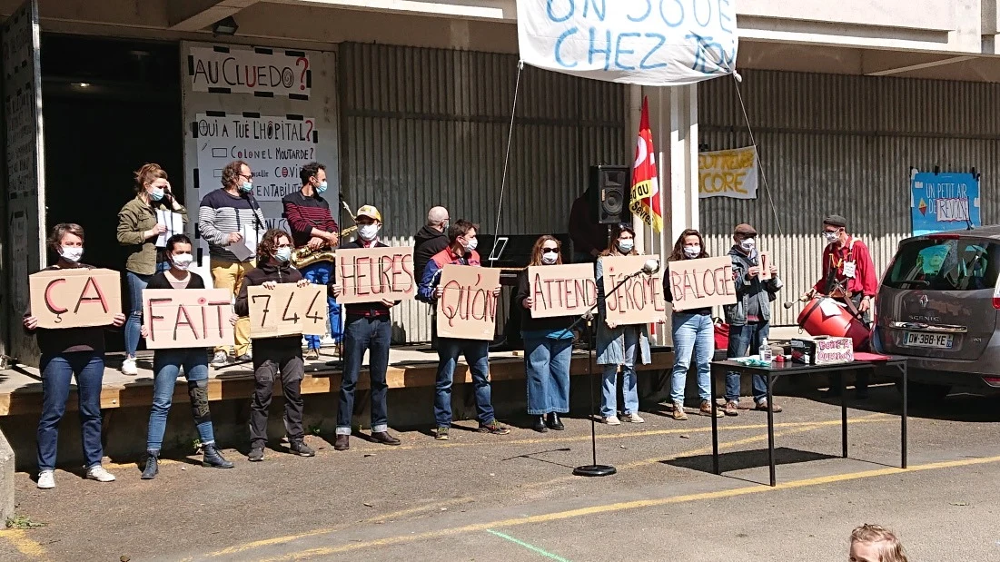
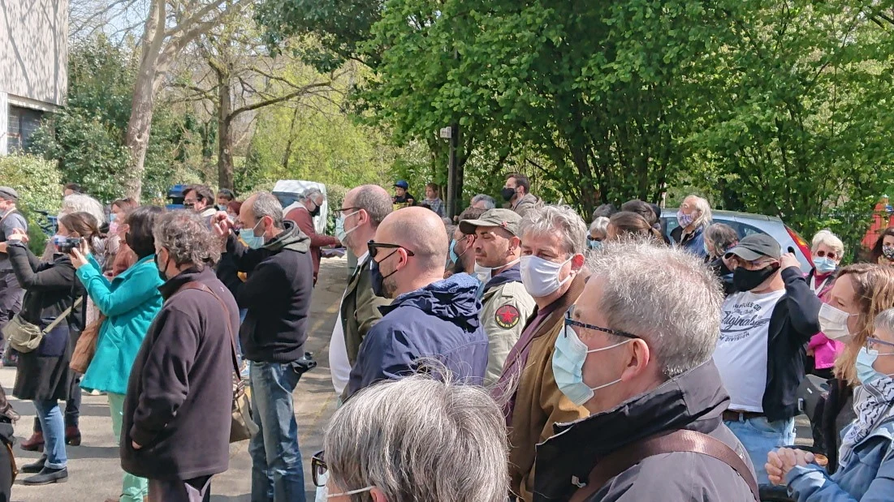
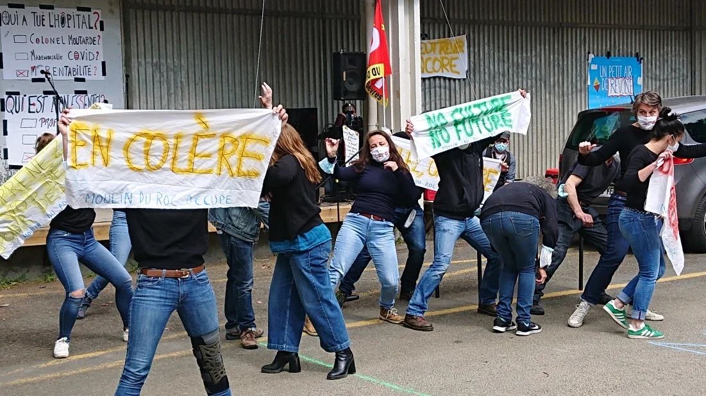
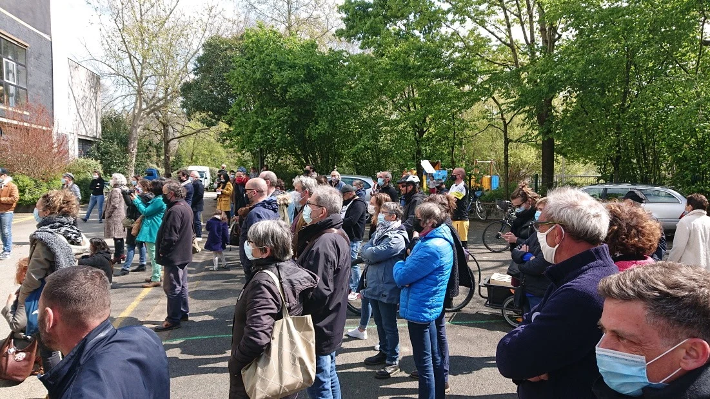

Publication d’archives
Convergence des luttes
Date indiquée par Facebook · 12 avril 2021
Texte conservé avec la publication
Contexte du dossier
Le compte rendu du 22 mars fait état d’environ 800 personnes dans la manifestation niortaise du samedi précédent. Il rapporte l’intervention de Sébastien, comédien du SFA-CGT : l’assurance chômage concerne tous les travailleurs précaires. Le 6 avril, la fédération reprend les revendications des occupants et relate une agora sur l’utilité et l’accessibilité de la culture, suivie d’une action à Port Boinot. Le retour du 12 avril décrit le débat de la veille sur la santé. Ces rencontres donnent un contenu à la convergence des luttes : rapprocher les difficultés, les promesses non tenues et les solutions collectives.




Sources
Archive rouge · export Facebook · AR-0002-FB-02046
À lire aussi · Au Moulin du Roc, notre soutien aux artistes et techniciens en lutte